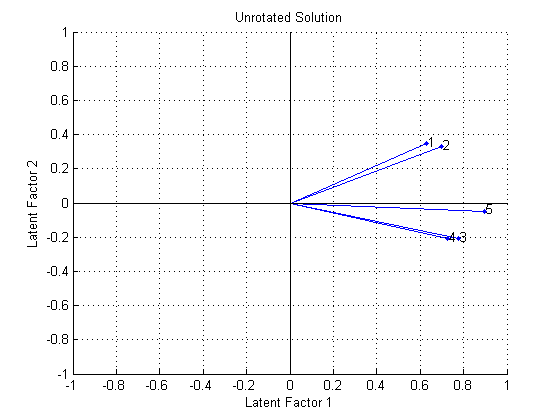
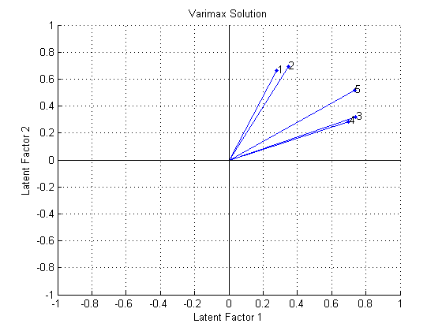
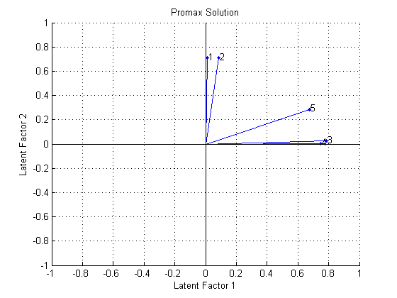
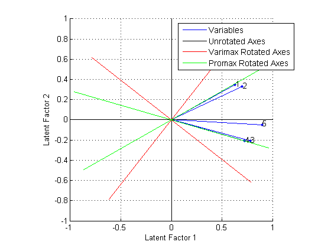
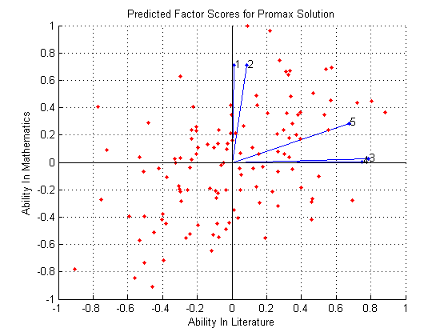

Multivariate data often include a large number of measured variables, and sometimes those variables "overlap" in the sense that groups of them may be dependent. For example, in a decathlon, each athlete competes in 10 events, but several of them can be thought of as "speed" events, while others can be thought of as "strength" events, etc. Thus, a competitor's 10 event scores might be thought of as largely dependent on a smaller set of 3 or 4 types of athletic ability.
Factor analysis is a way to fit a model to multivariate data to estimate just this sort of interdependence. This is a demonstration of how to perform factor analysis using the Statistics Toolbox.
In the factor analysis model, the measured variables depend on a smaller number of unobserved (latent) factors. Because each factor may affect several variables in common, they are known as "common factors". Each variable is assumed to depend on a linear combination of the common factors, and the coefficients are known as loadings. Each measured variable also includes a component due to independent random variability, known as "specific variance" because it is specific to one variable.
Specifically, factor analysis assumes that the covariance matrix of your data is of the form
SigmaX = Lambda*Lambda' + Psi
where Lambda is the matrix of loadings, and the elements of the diagonal matrix Psi are the specific variances. The function FACTORAN fits the factor analysis model using maximum likelihood.
120 students have each taken five exams, the first two covering mathematics, the next two on literature, and a comprehensive fifth exam. It seems reasonable that the five grades for a given student ought to be related. Some students are good at both subjects, some are good at only one, etc. The goal of this analysis is to determine if there is quantitative evidence that the students' grades on the five different exams are largely determined by only two types of ability.
First load the data, then call FACTORAN and request a model fit with a single common factor.
load examgrades
[Loadings1,specVar1,T,stats] = factoran(grades,1);
FACTORAN's first two return arguments are the estimated loadings and the estimated specific variances. From the estimated loadings, you can see that the one common factor in this model puts large positive weight on all five variables, but most weight on the fifth, comprehensive exam.
Loadings1
Loadings1 =
0.6021
0.6686
0.7704
0.7204
0.9153
One interpretation of this fit is that a student might be thought of in terms of their "overall ability", for which the comprehensive exam would be the best available measurement. A student's grade on a more subject-specific test would depend on their overall ability, but also on whether or not the student was strong in that area. This would explain the lower loadings for the first four exams.
From the estimated specific variances, you can see that the model indicates that a particular student's grade on a particular test varies quite a lot beyond the variation due to the common factor.
specVar1
specVar1 =
0.6375
0.5530
0.4065
0.4810
0.1623
A specific variance of 1 would indicate that there is _no_ common factor component in that variable, while a specific variance of 0 would indicate that the variable is _entirely_ determined by common factors. These exam grades seem to fall somewhere in between, although there is the least amount of specific variation for the comprehensive exam. This is consistent with the interpretation given above of the single common factor in this model.
The p-value returned in the stats structure rejects the null hypothesis of a single common factor, so we refit the model.
stats.p
ans =
0.0332
Next, use two common factors to try and better explain the exam scores. With more than one factor, you could rotate the estimated loadings to try and make their interpretation simpler, but for the moment, ask for an unrotated solution.
[Loadings2,specVar2,T,stats] = factoran(grades,2,'rotate','none');
From the estimated loadings, you can see that the first unrotated factor puts approximately equal weight on all five variables, while the second factor contrasts the first two variables with the second two.
Loadings2
Loadings2 =
0.6289 0.3485
0.6992 0.3287
0.7785 -0.2069
0.7246 -0.2070
0.8963 -0.0473
You might interpret these factors as "overall ability" and "quantitative vs. qualitative ability", extending the interpretation of the one-factor fit made earlier.
A plot of the variables, where each loading is a coordinate along the corresponding factor's axis, illustrates this interpretation graphically. The first two exams have a positive loading on the second factor, suggesting that they depend on "quantitative" ability, while the second two exams apparently depend on the opposite. The fifth exam has only a small loading on this second factor.
biplot(Loadings2, 'varlabels',num2str((1:5)')); title('Unrotated Solution'); xlabel('Latent Factor 1'); ylabel('Latent Factor 2');
From the estimated specific variances, you can see that this two-factor model indicates somewhat less variation beyond that due to the common factors than the one-factor model did. Again, the least amount of specific variance occurs for the fifth exam.
specVar2
specVar2 =
0.4829
0.4031
0.3512
0.4321
0.1944
The stats structure shows that there is only a single degree of freedom in this two-factor model.
stats.dfe
ans =
1
With only five measured variables, you cannot fit a model with more than two factors.
You made the fits above using the raw test scores, but sometimes you might only have a sample covariance matrix that summarizes your data. FACTORAN accepts either a covariance or correlation matrix, using the 'Xtype' parameter, and gives an identical result to that from the raw data.
Sigma = cov(grades); [LoadingsCov,specVarCov] = ... factoran(Sigma,2,'Xtype','cov','rotate','none'); LoadingsCov
LoadingsCov =
0.6289 0.3485
0.6992 0.3287
0.7785 -0.2069
0.7246 -0.2070
0.8963 -0.0473
Sometimes, the estimated loadings from a factor analysis model can give a large weight on several factors for some of the measured variables, making it difficult to interpret what those factors represent. The goal of factor rotation is to find a solution for which each variable has only a small number of large loadings, i.e., is affected by a small number of factors, preferably only one.
If you think of each row of the loadings matrix as coordinates of a point in M-dimensional space, then each factor corresponds to a coordinate axis. Factor rotation is equivalent to rotating those axes, and computing new loadings in the rotated coordinate system. There are various ways to do this. Some methods leave the axes orthogonal, while others are oblique methods that change the angles between them.
Varimax is one common criterion for orthogonal rotation. FACTORAN performs varimax rotation by default, so you do not need to ask for it explicitly.
[LoadingsVM,specVarVM,rotationVM] = factoran(grades,2);
A quick check of the varimax rotation matrix returned by FACTORAN confirms that it is orthogonal. Varimax, in effect, rotates the factor axes in the figure above, but keeps them at right angles.
rotationVM'*rotationVM
ans =
1.0000 0.0000
0.0000 1.0000
A biplot of the five variables on the rotated factors shows the effect of varimax rotation.
biplot(LoadingsVM, 'varlabels',num2str((1:5)')); title('Varimax Solution'); xlabel('Latent Factor 1'); ylabel('Latent Factor 2');
Varimax has rigidly rotated the axes in an attempt to make all of the loadings close to zero or one. The first two exams are closest to the second factor axis, while the third and fourth are closest to the first axis and the fifth exam is at an intermediate position. These two rotated factors can probably be best interpreted as "quantitative ability" and "qualitative ability". However, because none of the variables are near a factor axis, the biplot shows that orthogonal rotation has not succeeded in providing a simple set of factors.
Because the orthogonal rotation was not entirely satisfactory, you can try using promax, a common oblique rotation criterion.
[LoadingsPM,specVarPM,rotationPM] = ... factoran(grades,2,'rotate','promax');
A check on the promax rotation matrix returned by FACTORAN shows that it is not orthogonal. Promax, in effect, rotates the factor axes in the first figure separately, allowing them to have an oblique angle between them.
rotationPM'*rotationPM
ans =
1.9405 -1.3509
-1.3509 1.9405
A biplot of the variables on the new rotated factors shows the effect of promax rotation.
biplot(LoadingsPM, 'varlabels',num2str((1:5)')); title('Promax Solution'); xlabel('Latent Factor 1'); ylabel('Latent Factor 2');
Promax has performed a non-rigid rotation of the axes, and has done a much better job than varimax at creating a "simple structure". The first two exams are close to the second factor axis, while the third and fourth are close to the first axis, and the fifth exam is in an intermediate position. This makes an interpretation of these rotated factors as "quantitative ability" and "qualitative ability" more precise.
Instead of plotting the variables on the different sets of rotated axes, it's possible to overlay the rotated axes on an unrotated biplot to get a better idea of how the rotated and unrotated solutions are related.
h1 = biplot(Loadings2, 'varlabels',num2str((1:5)')); xlabel('Latent Factor 1'); ylabel('Latent Factor 2'); hold on invRotVM = inv(rotationVM); h2 = line([-invRotVM(1,1) invRotVM(1,1) NaN -invRotVM(2,1) invRotVM(2,1)], ... [-invRotVM(1,2) invRotVM(1,2) NaN -invRotVM(2,2) invRotVM(2,2)],'Color',[1 0 0]); invRotPM = inv(rotationPM); h3 = line([-invRotPM(1,1) invRotPM(1,1) NaN -invRotPM(2,1) invRotPM(2,1)], ... [-invRotPM(1,2) invRotPM(1,2) NaN -invRotPM(2,2) invRotPM(2,2)],'Color',[0 1 0]); hold off axis square lgndHandles = [h1(1) h1(end) h2 h3]; lgndLabels = {'Variables','Unrotated Axes','Varimax Rotated Axes','Promax Rotated Axes'}; legend(lgndHandles, lgndLabels, 'location','northeast', 'fontname','arial narrow');
Sometimes, it is useful to be able to classify an observation based on its factor scores. For example, if you accepted the two-factor model and the interpretation of the promax rotated factors, you might want to predict how well a student would do on a mathematics exam in the future.
Since the data are the raw exam grades, and not just their covariance matrix, we can have FACTORAN return predictions of the value of each of the two rotated common factors for each student.
[Loadings,specVar,rotation,stats,preds] = ... factoran(grades,2,'rotate','promax','maxit',200); biplot(Loadings, 'varlabels',num2str((1:5)'), 'Scores',preds); title('Predicted Factor Scores for Promax Solution'); xlabel('Ability In Literature'); ylabel('Ability In Mathematics');
This plot shows the model fit in terms of both the original variables (vectors) and the predicted scores for each observation (points). The fit suggests that, while some students do well in one subject but not the other (second and fourth quadrants), most students do either well or poorly in both mathematics and literature (first and third quadrants). You can confirm this by looking at the estimated correlation matrix of the two factors.
inv(rotation'*rotation)
ans =
1.0000 0.6962
0.6962 1.0000
There is a good deal of overlap in terminology and goals between Principal Components Analysis (PCA) and Factor Analysis (FA). Much of the literature on the two methods does not distinguish between them, and some algorithms for fitting the FA model involve PCA. Both are dimension-reduction techniques, in the sense that they can be used to replace a large set of observed variables with a smaller set of new variables. They also often give similar results. However, the two methods are different in their goals and in their underlying models. Roughly speaking, you should use PCA when you simply need to summarize or approximate your data using fewer dimensions (to visualize it, for example), and you should use FA when you need an explanatory model for the correlations among your data.